系统概览
牧卫（Mockway）机械臂为开源六轴协作机械臂，共使用 6 台达妙 CAN 总线电机，通过 1 Mbps CAN 总线 与上位机通信。
| 关节 | 名称 | 电机型号 | CAN ID | Master ID（本项目） | 旋转方向 dir |
|---|---|---|---|---|---|
| J1 / joint1 | 基座旋转 | DM-J4310-2EC | 0x01 (1) | 0 | +1 |
| J2 / joint2 | 肩部 | DM4340 | 0x02 (2) | 0 | +1 |
| J3 / joint3 | 肘部 | DM4340 | 0x03 (3) | 0 | -1 |
| J4 / joint4 | 腕部俯仰 | DM-J4310-2EC | 0x04 (4) | 0 | +1 |
| J5 / joint5 | 腕部滚转 | DM-J4310-2EC | 0x05 (5) | 0 | +1 |
| J6 / joint6 | 腕部偏航 / 末端 | DM-J4310-2EC | 0x06 (6) | 0 | +1 |
motor_gui 与 dmmotor_hardware_interface 仅使用已配置好的 ID 进行通信与控制。
电机 ID 配置（核心）
为什么不能并联后一起改 ID？
CAN 总线上每台电机的 CAN_ID 必须唯一。若多台电机使用相同 ID 同时上电，总线会产生冲突，无法正确通信。因此必须每次只连接一台电机进行 ID 设置，完成后再接入下一台。
所需工具与连接
- 达妙科技调试助手（官方上位机，通过电机调试串口连接）
- GH1.25-3pin 调试线：连接电机调试串口与电脑 USB
- USB 转 CAN 模块（维特 USB-CAN 或达妙官方模块）：连接电机 CAN 口
- 24V 电源：为电机供电（CAN 通信需要电机上电）
- XT30(2+2) 线：电源 + CAN 四线一体插头
达妙调试助手操作步骤（每台电机重复一次）
- 仅连接当前要配置的一台电机（不要接入其他电机到同一 CAN 总线）。
- 打开达妙科技调试助手，选择正确的 COM 串口，点击 Open Port 连接。
- 给电机上电，确认串口打印电机信息。
- 在 Set Parameters 区域点击 Read Param，读取当前参数。
- 设置以下关键参数：
- CAN_ID：按上表设置为 1～6（十六进制
0x01～0x06） - Master ID：本项目统一使用
0（与motor_gui、dynamics_test.yaml默认一致） - Control Mode：建议设为 MIT Mode
- CAN 波特率：固定 1 Mbps（与代码中
can_baudrate=1000000一致）
- CAN_ID：按上表设置为 1～6（十六进制
- 点击 Write Param 写入并保存到驱动器（断电后仍保留）。
- 再次 Read Param 确认 CAN_ID 与 Master ID 已正确保存。
- 断电，贴标签标明关节号与 ID，再进行下一台。
Master ID = CAN_ID + 0x10（例如 CAN_ID=1 时 Master=0x11），且不可设为 0x00。本 Mockway 项目在所有配置文件中统一使用 master_id: 0。若您按官方建议设置了 Master ID，则在使用 motor_gui 验证时，须将界面中的 Master ID 改为与电机一致（例如 CAN_ID=1 时填 17 即 0x11），否则无法收到反馈帧。
推荐配置顺序
建议按关节编号顺序配置，并在电机外壳上贴标签，避免组装后混淆：
| 顺序 | 贴标签 | 电机型号 | CAN_ID | Master ID（本项目） |
|---|---|---|---|---|
| 1 | J1 | DM-J4310-2EC ×1 | 1 | 0 |
| 2 | J2 | DM4340 ×1 | 2 | 0 |
| 3 | J3 | DM4340 ×1 | 3 | 0 |
| 4 | J4 | DM-J4310-2EC ×1 | 4 | 0 |
| 5 | J5 | DM-J4310-2EC ×1 | 5 | 0 |
| 6 | J6 | DM-J4310-2EC ×1 | 6 | 0 |
CAN 通信协议要点（来自代码实现）
本项目的 Python 驱动 tools/motor_gui/dm_motor_driver.py 与 C++ 硬件接口 dmmotor_hardware_interface 使用相同的达妙 MIT 协议：
- 控制帧 ID = 电机
CAN_ID（发送 MIT 控制、使能、失能、设零点等命令） - 反馈帧 ID = 电机
Master ID（默认 0；反馈数据 D[0] 低 4 位为电机 ID） - 使能命令：8 字节
FF FF FF FF FF FF FF FC - 失能命令：8 字节
FF FF FF FF FF FF FF FD - 设零点命令：8 字节
FF FF FF FF FF FF FF FE（双编码器电机此命令无效，Mockway 使用 DM4310/4340 双编码器型号） - 位置-速度模式：帧 ID =
0x100 + motor_id - 速度模式：帧 ID =
0x200 + motor_id
ID 验证与调试
每台电机 ID 写入后，或全部组装完成上电前，使用项目自带的图形调试工具验证：
python tools/motor_gui/motor_gui.py
单电机验证步骤
- 仅连接一台待测电机到 USB-CAN 适配器。
- 打开
motor_gui.py，配置：- USB-CAN 类型：达妙官方模块选「达妙 USB-CAN」，维特模块选「维特 USB-CAN」
- COM 口：Windows 为
COMx，Linux 为/dev/ttyUSB0（须为 USB-CAN 模块口，非电机调试串口） - 串口波特率：
921600 - 电机类型：J1/J4/J5/J6 选 DM-J4310-2EC，J2/J3 选 DM4340
- 电机 ID：对应 1～6
- Master ID：
0（填 0 时按反馈数据内 ID 自动匹配）
- 点击「连接」。若 3 秒内收到反馈，说明 ID 与接线正确。
- 点击「使能电机」，用正转/反转按钮测试运动，并记录该关节电机正转时位置读数是增大还是减小（用于确定
direction，见 关节旋转方向）。

motor_gui 单电机调试界面
六电机总线验证
全部电机 ID 唯一且 CAN 总线正确菊花链连接后，逐台修改 GUI 中的电机 ID（1→6）重复连接测试。也可在 Linux 下使用：
candump can0 # 应能看到各 ID 的反馈帧
力矩补偿测试（整臂联调）
完成六电机 ID 验证、机械组装及关节零点标定后，可通过实时力矩补偿程序验证整臂通信、动力学模型与重力补偿是否正常。该步骤在单电机 motor_gui 调试之后、运行 MoveIt 之前进行。
1. 安装依赖
Windows：请直接跳到下方「Windows 推荐：用 Miniconda 安装 Pinocchio」，不要对完整 requirements.txt 执行 pip。
Linux：可尝试：
cd tools/dynamics_test pip install -r requirements.txt -i https://pypi.tuna.tsinghua.edu.cn/simple
依赖包括 pinocchio（刚体动力学）、numpy、matplotlib。Linux 下也可使用 conda：
conda create -n mockway_dynamics python=3.10 -y conda activate mockway_dynamics conda install pinocchio -c conda-forge -y pip install -r requirements.txt
pip 使用国内镜像源（下载过慢时）
若默认 PyPI 源速度较慢，可在单次命令中通过 -i 指定国内镜像：
# 清华大学（常用） pip install -r requirements.txt -i https://pypi.tuna.tsinghua.edu.cn/simple # 阿里云 pip install -r requirements.txt -i https://mirrors.aliyun.com/pypi/simple/ # 中国科技大学 pip install -r requirements.txt -i https://pypi.mirrors.ustc.edu.cn/simple/ # 腾讯云 pip install -r requirements.txt -i https://mirrors.cloud.tencent.com/pypi/simple
安装单个包时同样适用，例如：
pip install pyserial -i https://pypi.tuna.tsinghua.edu.cn/simple
若提示 SSL/证书相关警告，可追加 --trusted-host（以清华源为例）：
# Linux / macOS pip install -r requirements.txt \ -i https://pypi.tuna.tsinghua.edu.cn/simple \ --trusted-host pypi.tuna.tsinghua.edu.cn # Windows（CMD / PowerShell 单行） pip install -r requirements.txt -i https://pypi.tuna.tsinghua.edu.cn/simple --trusted-host pypi.tuna.tsinghua.edu.cn
如需永久生效，可写入 pip 配置文件，之后普通 pip install 即走国内源：
| 系统 | 配置文件路径 |
|---|---|
| Windows | %APPDATA%\pip\pip.ini |
| Linux / macOS | ~/.pip/pip.conf |
[global] index-url = https://pypi.tuna.tsinghua.edu.cn/simple trusted-host = pypi.tuna.tsinghua.edu.cn
motor_gui 依赖安装示例：
cd tools/motor_gui pip install -r requirements.txt -i https://pypi.tuna.tsinghua.edu.cn/simple
dynamics_test 依赖的 pin（Pinocchio）在 Windows 上常常没有可用的 pip 预编译包，pip install -r requirements.txt 会卡在 Installing build dependencies ...（实为后台下载/编译 C++ 依赖，无进度条，可能数十分钟仍失败）。请勿在 Windows 上用 pip 安装 Pinocchio，请改用下方 conda 方案。
Windows 推荐：用 Miniconda 安装 Pinocchio
可双击运行项目自带管理脚本（含菜单：1 安装 / 2~4 启动工具 / 5 工作 shell / 6 停止；未安装 Miniconda 时会自动下载安装）：
setup_win_tools.bat
安装完成后从菜单选择对应工具即可。也可命令行：
setup_win_tools.bat setup REM 仅安装 setup_win_tools.bat motor_gui REM 电机调试 setup_win_tools.bat torque REM 实时力矩补偿 setup_win_tools.bat inverse REM 离线动力学测试 setup_win_tools.bat shell REM 打开工作 shell setup_win_tools.bat stop REM 关闭工具窗口
也可手动执行以下步骤。1. 安装 Miniconda（或 Anaconda）后，打开 Anaconda Prompt，执行：
conda create -n mockway_dynamics python=3.10 -y conda activate mockway_dynamics conda install pinocchio -c conda-forge -y cd 你的路径\mockway_robotics\tools\dynamics_test pip install numpy matplotlib pyserial pyyaml -i https://pypi.tuna.tsinghua.edu.cn/simple
2. 验证 Pinocchio 是否可用：
python -c "import pinocchio; print('pinocchio OK', pinocchio.__version__)"
3. 之后运行力矩补偿前，每次先 conda activate mockway_dynamics。
说明：motor_gui 只需 pyserial，继续用普通 pip 即可；仅力矩补偿需要 Pinocchio，因此 Windows 上分开环境安装最省事。
2. 配置文件
编辑 tools/dynamics_test/dynamics_test.yaml，确保与电机实际 ID、接线一致：
can:
port: "COM8" # 改为你的 USB-CAN COM 口（与 motor_gui 相同）
adapter_type: "damiao" # USB-CAN 控制器：damiao=达妙，witmotion=维特（须与 motor_gui 一致）
serial_baudrate: 921600
can_baudrate: 1000000
motors:
- id: 1
type: "DM_J4310_2EC"
master_id: 0
direction: 1
- id: 2
type: "DM4340"
...
- id: 3
type: "DM4340"
direction: -1 # J3 反向，与 ros2_control 一致
# id 4~6 略
control:
rate: 100
compensation_mode: "gravity"
torque_scale: 1.0 # 未单独指定时的全局 fallback
gravity_torque_scale: 1.0 # 纯重力 g(q) 全局倍率 → 菜单「1. 启动重力补偿」
full_dynamics_torque_scale: 0.35 # 完整动力学全局倍率 → 菜单「2. 启动完整动力学补偿」
hold_inactive_joints: true
mit_params:
kp: 0.0 # 补偿关节纯 t_ff
kd: 0.0
motors:
- id: 2
type: "DM4340"
compensation_enabled: true
gravity_torque_scale: 1.2 # 纯重力：悬停支撑（宜接近 motor_gui 标定值）
full_dynamics_torque_scale: 0.2 # 完整动力学：拖动示教（宜偏小，防抖动）
六路电机 ID、型号、direction 须与上文「软件中的 ID 映射」及 mockway_description.ros2_control.xacro 完全一致。纯重力与完整动力学须分开标定倍率，详见 分模式力矩倍率。
3. 测试前检查清单
- 机械结构与 URDF 模型一致，各关节零点已标定
- 24V 供电、CAN 菊花链及 120Ω 终端电阻已接好
- 六台电机均已通过
motor_gui单电机/总线验证 - 工作区无障碍物，可快速切断电源
4. 力矩值预验证（推荐）
首次运行前，可在 realtime_torque_compensation.py 中暂时注释 controller.enable_motors()，先启动程序观察 Pinocchio 计算的力矩值是否在合理范围（J1/J4/J5/J6 约 ±10 Nm 内，J2/J3 约 ±28 Nm 内）。确认无误后再恢复使能。
5. 运行重力补偿测试
cd tools/dynamics_test python realtime_torque_compensation.py
进入交互菜单后：
- 选择 「1. 启动重力补偿」（对应
compensation_mode: "gravity"，仅补偿重力项τ = g(q)） - 手动缓慢拖动各关节，机械臂应接近「失重」感，无明显下坠或猛甩
- 测试完成后选择 「3. 停止补偿」，再选 「0. 退出」；也可随时按 Ctrl+C 紧急停止
也可直接以演示模式启动（跳过菜单）：
python realtime_torque_compensation.py --demo gravity python realtime_torque_compensation.py --can-port COM8 # 覆盖 yaml 中的端口 python realtime_torque_compensation.py --can-adapter damiao # 覆盖适配器类型

实时力矩补偿程序运行界面（重力补偿模式）
6. 补偿模式说明
| 模式 | 菜单选项 | 补偿内容 | 适用场景 |
|---|---|---|---|
| gravity | 1. 启动重力补偿 | 仅重力 g(q) | 悬停支撑、静态姿态验证；使用 gravity_torque_scale |
| full_dynamics | 2. 启动完整动力学补偿 | 惯性 + 科氏 + 离心 + 重力 | 拖动示教、快速运动；使用 full_dynamics_torque_scale（通常更小） |
| none | — | 无补偿 | 对比测试 |
7. 预期现象与异常处理
- 正常：重力补偿开启后，各关节可轻松用手推动，松手后无明显剧烈摆动
- 某关节反力过大/过小：检查该关节
direction是否与 xacro 一致；复查零点标定 - 抖动或飞车：完整动力学模式倍率过大时易抖，请降低
full_dynamics_torque_scale；重力模式用gravity_torque_scale。确认补偿关节为纯t_ff（kp=0, kd=0）；逐轴调试时开启hold_inactive_joints（见 分模式力矩倍率、URDF 质量与重力补偿） - 无法连接电机 / 出现「进入AT指令模式」警告：说明当前使用了维特协议，而硬件是达妙 USB-CAN。在
dynamics_test.yaml中设置can.adapter_type: "damiao"，与motor_gui下拉框一致 - 无法连接电机：核对
dynamics_test.yaml中can.port、can.adapter_type、电机 ID；关闭占用 COM 口的其他程序（含达妙助手、motor_gui）
python inverse_dynamics_test.py，用于验证 URDF 与 Pinocchio 模型；整臂联调以 realtime_torque_compensation.py 为准。URDF 质量与分模式力矩倍率见 URDF 质量与重力补偿。
URDF 质量与重力补偿
实时力矩补偿程序（realtime_torque_compensation.py）通过 Pinocchio 读取 URDF 中的连杆质量、质心、惯量，根据当前关节角 q 计算模型力矩，再经分模式力矩倍率修正后发给电机。因此 URDF 质量是否接近实物，以及各模式下的倍率标定，直接决定补偿是否安全有效。
质量在哪里设置？
主文件（须优先修改）：
mockway_description/urdf/mockway_description.urdf
MoveIt 使用的 xacro 仅引用上述 URDF，不在 xacro 里单独写质量：
moveit_mockway_config/config/mockway_description.urdf.xacro → include mockway_description/urdf/mockway_description.urdf
力矩补偿程序同样加载该 URDF 路径（见 realtime_torque_compensation.py 中的 mockway_description/urdf/mockway_description.urdf）。
mockway_lua_moveit/ui/public/urdf/mockway_description.urdf 等副本可能与主 URDF 质量不一致；以 mockway_description/urdf/ 为准，修改后如需 Web 预览再同步副本。
URDF 中的写法
每个连杆 <link> 内都有 <inertial> 块。以 J2 对应连杆 link2 为例：
<link name="link2">
<inertial>
<mass value="0.568"/> <!-- 质量 (kg)，主要改这里 -->
<origin xyz="0.000 0.035 0.069" rpy="0 0 0"/> <!-- 质心相对 link 坐标系 (m) -->
<inertia ixx="0.002661" iyy="0.000305" izz="0.002654"
ixy="-0.000000" ixz="-0.000000" iyz="-0.000043"/> <!-- 惯量 (kg·m²) -->
</inertial>
...
</link>
各字段含义：
| 字段 | 含义 | 对重力补偿的影响 |
|---|---|---|
mass | 连杆质量 (kg) | 最主要：质量越大，下游关节所需补偿力矩越大 |
origin xyz | 质心位置 (m) | 决定力臂：质心离关节轴越远，重力矩越大 |
inertia ixx…izz | 转动惯量 | 纯重力补偿 g(q) 几乎不用；完整动力学补偿时才重要 |
visual / collision 中的 mesh | 显示与碰撞网格 | 不会自动参与动力学计算；改 STL 不会改质量，须手动改 inertial |
本机 Mockway 默认质量一览
以下为当前 mockway_description.urdf 中各 link 的 mass（单位 kg）：
| 连杆 (link) | 对应关节 | 结构件说明 | 默认 mass (kg) |
|---|---|---|---|
base_link | —（基座） | base | 0.097 |
link1 | J1 | 基座旋转段 + 电机壳等 | 0.378 |
link2 | J2 | 上臂大臂段（J2 之后整段重量） | 0.568 |
link3 | J3 | 上臂远端 + 肘部连杆 | 0.488 |
link4 | J4 | 前臂段 | 0.378 |
link5 | J5 | 腕部段 | 0.378 |
link6 | J6 | 末端法兰 / tail | 0.016 |
Pinocchio 会把当前姿态下所有下游 link 的重力，折算到每个关节的 g(q) 上。例如 J2 的补偿力矩不仅取决于 link2 的质量，还取决于 J3～J6 及末端负载的总重与姿态。
分模式力矩倍率（gravity / full_dynamics）
纯重力补偿与完整动力学补偿对力矩大小需求不同，共用同一倍率往往无法两者兼顾：
| 补偿模式 | 模型输出 | 典型用途 | 倍率特点 |
|---|---|---|---|
gravity |
仅 g(q) |
悬停、静态支撑、验证 URDF 重量 | 倍率宜偏大（如 J2 约 1.2），使松手后不下坠 |
full_dynamics |
M(q)·a + C(q,v) + g(q) |
拖动示教、快速运动跟随 | 倍率宜偏小（如 J2 约 0.2），否则惯性/科氏项叠加后易抖动；过小则拖动手感重、不足以单独支撑机械臂 |
程序在切换菜单「1. 重力补偿 / 2. 完整动力学补偿」时，自动选用对应倍率，无需改 yaml 中的 compensation_mode 后再重启（启动控制时会打印当前模式各关节有效倍率）。
配置文件项
有效倍率 = 全局倍率 × 关节倍率。未写模式专用项时，回退到 torque_scale。
| 配置项 | 作用域 | 用于模式 |
|---|---|---|
control.gravity_torque_scale | 全局 | gravity |
control.full_dynamics_torque_scale | 全局 | full_dynamics |
motors[].gravity_torque_scale | 单关节 | gravity |
motors[].full_dynamics_torque_scale | 单关节 | full_dynamics |
control.torque_scale / motors[].torque_scale | 全局 / 单关节 | 上述未指定时的 fallback |
# dynamics_test.yaml 示例（Mockway J2 实测参考）
control:
gravity_torque_scale: 1.0
full_dynamics_torque_scale: 0.35
motors:
- id: 2
compensation_enabled: true
gravity_torque_scale: 1.2 # 纯重力：悬停约需 motor_gui ~0.5 Nm 时标定
full_dynamics_torque_scale: 0.2 # 完整动力学：拖动示教手感合适
标定建议
- 重力模式：菜单选「1. 启动重力补偿」，用
motor_gui在同一姿态找悬停力矩，调节gravity_torque_scale直至松手近似不下坠。 - 完整动力学模式：菜单选「2. 启动完整动力学补偿」，从较小倍率（如 0.15～0.3）试起，缓慢拖动各关节；若抖动则再减小，若拖动过沉则略增大。
- 两种模式分别标定，不要共用同一
torque_scale。
程序如何用力矩（计算链）
模型力矩是根据 URDF 与当前姿态算出来的；模式倍率是 motor_gui / 拖动手感标定的经验修正。
力矩倍率与 URDF 质量的关系
若 URDF 质量准确，各关节模式倍率应接近合理标定值（重力模式常接近 1.0，完整动力学通常更小）。若重力模式也需要远小于 1 的系数，说明模型重力矩明显大于真机，常见原因包括：
- 打印件实际重量与 CAD/URDF 不一致（填充率、材料、未计入螺丝/线材）
- 末端工具、夹具、线缆未写入 URDF（应加在
link6或新建 tool link） - 质心
origin偏差导致力臂过大 - 传动摩擦、效率等 URDF 无法建模（只能用模式倍率近似）
用 motor_gui 标定 gravity_torque_scale
- 在固定姿态下，用
motor_gui只连目标关节，启动力矩控制，从 0 Nm 缓慢调节。 - 找到使关节近似悬停的力矩，记为
τ_实测（例如 J2 约 0.5 Nm）。 - 运行力矩补偿重力模式，将
gravity_torque_scale暂设为 1.0，查看 Pinocchio 输出的τ_模型。 - 计算：
gravity_torque_scale ≈ τ_实测 ÷ τ_模型，写入motors[].gravity_torque_scale。 full_dynamics_torque_scale在菜单「2. 完整动力学补偿」下单独从较小值试起，按拖动手感微调。
如何正确修改 URDF 质量
方法一：称重（推荐）
- 理解 URDF 中每个 link 的质量通常包含该关节之后整段结构的等效质量（按 CAD 导出惯例），不是「单独一个打印件」。
- 用电子秤称量实物各段（含电机、壳体、连杆、线材），与表中默认值对比。
- 若仅某段偏重，修改对应 link 的
mass value；若末端加了夹具，优先增大link6的 mass，或增加新的 tool link。 - 保存 URDF 后运行
python inverse_dynamics_test.py查看各姿态下g(q)是否合理。 - 再用
realtime_torque_compensation.py验证；gravity_torque_scale应逐步接近 1.0。
方法二：按比例缩放（快速试凑）
若重力模式标定倍率明显小于 1，可尝试把影响该关节的主要 link 质量乘以相近比例，再测试。此法粗糙，仍建议称重。
修改示例
将 J2 段质量从 0.568 kg 改为称重值 0.45 kg：
<link name="link2">
<inertial>
<mass value="0.45"/> <!-- 原 0.568 -->
...
</inertial>
direction 与零点正确 → 分模式标定 gravity_torque_scale / full_dynamics_torque_scale → 有时间再按称重修正 URDF，使重力倍率回归 1.0。
验证修改是否生效
cd tools/dynamics_test
conda activate mockway_dynamics # Windows 用户
# 离线查看各姿态重力矩
python inverse_dynamics_test.py
# 单姿态快速查看（示例：J2=30°）
python -c "
import pinocchio as pin
import numpy as np
from pathlib import Path
urdf = Path('../../mockway_description/urdf/mockway_description.urdf')
model = pin.buildModelFromUrdf(str(urdf))
data = model.createData()
q = np.array([0, np.deg2rad(30), 0, 0, 0, 0])
g = pin.computeGeneralizedGravity(model, data, q)
print('g(q) [Nm]:', g)
print('J2 (index 1):', g[1])
"
修改 URDF 后无需重新编译，重启 realtime_torque_compensation.py 即可加载新质量。
软件中的 ID 映射
以下配置文件中的 ID 必须与电机实际 CAN_ID 一致，否则 MoveIt / 力矩补偿无法正常工作：
关节旋转方向（direction / dir）
URDF、Pinocchio、MoveIt 中的关节角 q（单位 rad）遵循统一约定：
- 沿该关节 URDF 定义的轴正方向朝外观察（右手系）：逆时针转动 →
q增大（rad +）；顺时针转动 →q减小（rad −）。 - 达妙电机反馈的原始位置
θmotor正负由转子实际安装方向决定，与关节正方向不一定相同。
doc/img/ 中保存，由脚本根据实物照片自动生成，标注各关节默认 dir 与 CCW 正方向，便于对照 motor_gui 正转验证。
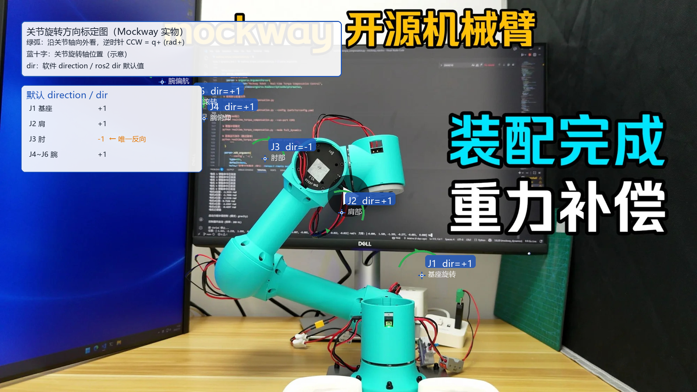
cover.jpg）。蓝十字为关节旋转轴示意位置；绿弧表示沿轴向外看时的 CCW = q+。标签中 dir=±1 为本仓库默认 direction / dir；J3 为唯一默认 −1。
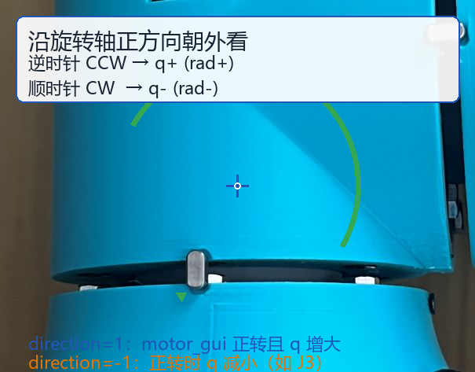
calibrate_joint.jpg）。适用于任意关节：沿轴正方向朝外看，逆时针为 rad+。
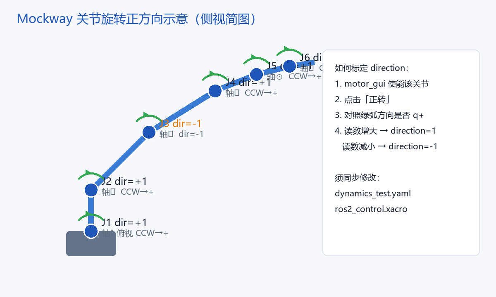
dir，以及 motor_gui 正转时如何判断 direction。
重新生成标注图（修改关节位置或更换照片后）：
pip install pillow python doc/tools/generate_joint_direction_images.py
源图：doc/img/cover.jpg、doc/img/calibrate_joint.jpg；输出：joint_direction_overview.png、joint_direction_ccw_guide.png、joint_direction_schematic.png。
软件中用 direction（dynamics_test.yaml）或 dir（ros2_control.xacro）把电机读数换算为关节角：
q_joint = direction × θ_motor direction = 1 # 电机读数增大时，关节角也增大（与 URDF 正方向一致） direction = -1 # 电机读数增大时，关节角减小（与 URDF 正方向相反）
如何确定 direction：零点标定后，在 motor_gui 中使能该关节，观察正转时反馈位置变化：
- 若正转使该关节按 URDF 定义逆时针（关节角应增大），且读数增大 → 设
direction: 1。 - 若正转使关节逆时针但读数减小（或正转对应顺时针）→ 设
direction: -1。
不同机械臂的法兰安装、减速器出轴方向、壳体相对 link 的固定方式都可能不同，不能假设所有关节均为 +1。Mockway 本仓库默认 J3 为 -1，其余为 +1；若您更改了结构件安装方式或复刻时镜像了某关节，须逐关节用上述方法验证并同步修改 dynamics_test.yaml 与 mockway_description.ros2_control.xacro 中的 direction / dir，否则 MoveIt 与重力补偿会出现反向运动或猛冲。
1. ROS2 硬件接口（MoveIt 主配置）
文件：moveit_mockway_config/config/mockway_description.ros2_control.xacro
<!-- Joint 1 --> <param name="can_id">0x01</param> <param name="type">1</param> <!-- DM4310 --> <!-- Joint 2 --> <param name="can_id">0x02</param> <param name="type">3</param> <!-- DM4340 --> <!-- Joint 3 --> <param name="can_id">0x03</param> <param name="type">3</param> <param name="dir">-1</param> <!-- Joint 4~6: can_id 0x04~0x06, type=1 -->
电机类型枚举：1=DM4310，3=DM4340。USB-CAN 默认端口 /dev/ttyUSB0，波特率 921600。
2. 力矩补偿 / 动力学测试
文件：tools/dynamics_test/dynamics_test.yaml
motors:
- id: 1
type: "DM_J4310_2EC"
master_id: 0
direction: 1
- id: 2
type: "DM4340"
...
- id: 3
type: "DM4340"
direction: -1
3. Python 驱动构造参数
motor = DMMotor(
can_adapter=can_adapter,
motor_id=1, # CAN 命令帧 ID
master_id=0, # 反馈帧 ID
motor_type=MotorType.DM_J4310_2EC
)
电气连接
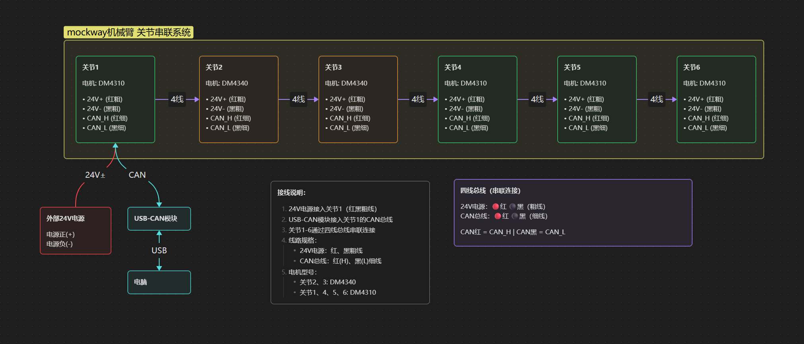
- 6 台电机 CAN 总线菊花链连接（CAN_H 接 CAN_H，CAN_L 接 CAN_L）
- CAN 总线两端各接 120Ω 终端电阻
- CAN 波特率：1 Mbps
- USB-CAN 适配器串口波特率：921600（维特模块，见 README）
- 供电：24V 统一电源
组装前准备
- 完成上述 6 台电机 ID 配置与单电机验证
- 3D 打印全部结构件（参见 BOM.md / MakerWorld）
- 准备 BOM 中列出的螺丝、热熔螺母、线材与工具
- 建议打印填充率 ≥ 40%，Gyroid 填充
1嵌入所有热熔螺母
工具：电烙铁
M2 热熔螺母
材料：flange.lua 结构件 5 个、土八热熔螺母 M2×3×3 共 10 个
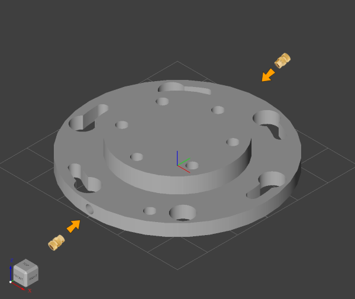
M3 热熔螺母
材料：shell.lua 6 个、tail.lua 1 个、base.lua 1 个、elbow.lua 1 个、土八热熔螺母 M3×4×4 共 60 个
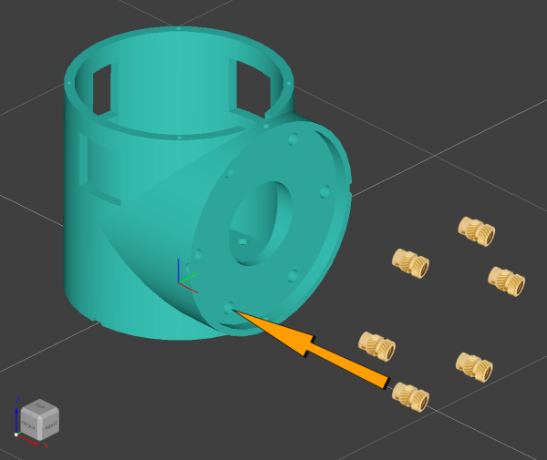
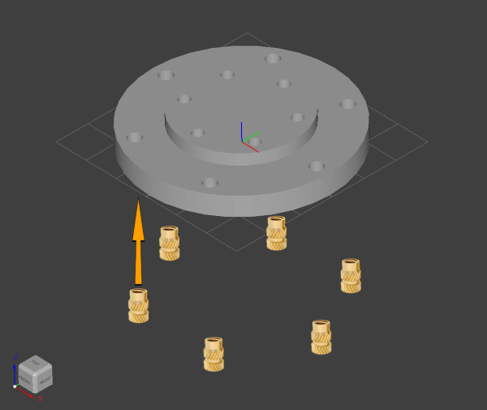
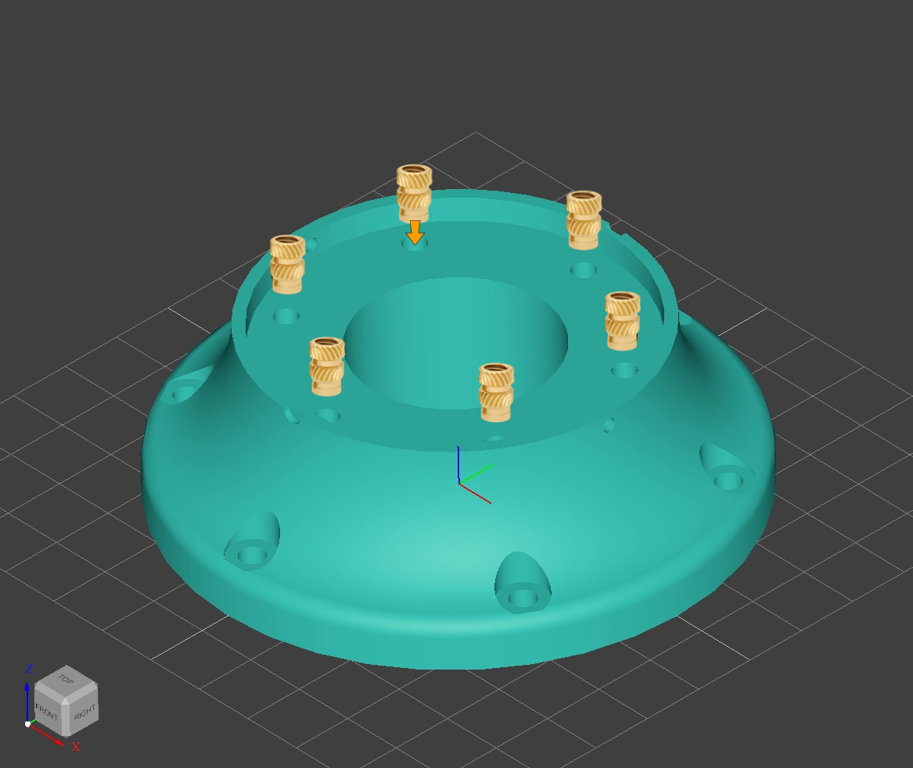
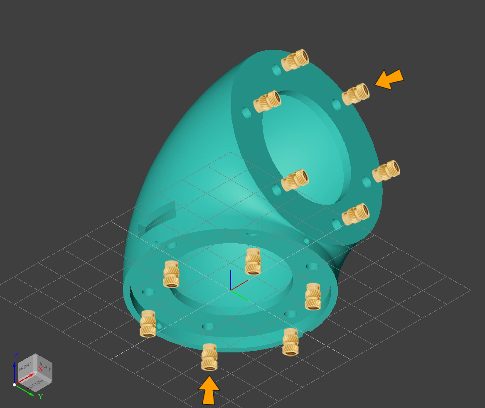
2安装所有电机到 shell
材料：shell.lua 6 个、DM4310 电机 4 个（J1/J4/J5/J6）、DM4340 电机 2 个（J2/J3）、沉头十字螺丝 M3×8 共 36 个
工具：十字螺丝刀

3安装所有法兰到电机转子
材料：装完电机的 shell 6 个、flange.lua 5 个、tail.lua 1 个、沉头十字螺丝 M3×12 共 36 个
工具：十字螺丝刀
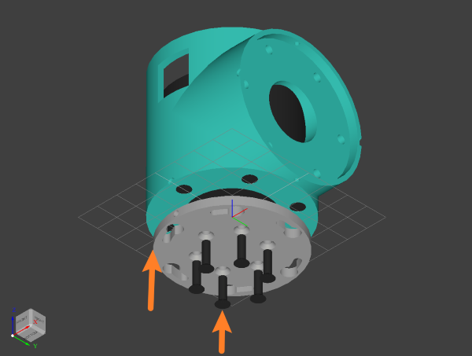
4安装关节 1 到基座
材料：base.lua 1 个、DM4310 关节（J1）1 个、外六角螺丝 M3×8 共 6 个、十字平头螺丝 M2×6 共 2 个
工具：开口扳手 5.5 mm、十字螺丝刀
- 将外六角螺丝 M3×8 预先拧入
base.lua的热熔螺母（不必完全拧紧）。 - 法兰两侧 M2 热熔螺母对准基座 M2 通孔，沿圆弧槽旋转，使法兰大孔对准外六角螺丝头。
- 所有螺丝头穿过关节法兰后，将螺丝转入法兰圆弧槽内。
- 用十字平头螺丝 M2×6 穿过基座 M2 通孔，固定在关节上。
- 用开口扳手 5.5 mm 将外六角螺丝拧紧在基座上。
5组装上臂
材料：DM4340 关节（J2、J3）2 个、linkage.lua（长）1 个、内六角螺丝钉 M3×10 共 12 个、XT30(2+2) 线 2 根、导线若干、焊锡、热缩管或电工胶布
工具：电烙铁、内六角扳手
- 将 XT30(2+2) 线插入关节 2，导线经电机上方剩余导线孔穿入 shell 内。
- 关节 3 同上。
- 将 4 条延长线插入
linkage.lua（长）的导线孔。 - 延长线两端分别经 J2、J3 法兰槽通孔穿入 shell，至电机顶部。
- 焊接所有导线（注意 CAN_H/CAN_L 极性一致）。
- 用内六角螺丝 M3×10 将 J2、J3 固定到长连杆，两关节轴须同向。
6安装上臂到关节 1
材料：当前本体 1 套、上臂 1 套、外六角螺丝 M3×8 共 6 个、十字平头螺丝 M2×6 共 2 个
工具：开口扳手 5.5 mm、十字螺丝刀
将 J2 安装到 J1，步骤与「关节 1 安装到底座」相同。
7组装前臂
材料：DM4310 关节（J4）1 个、elbow.lua 1 个、linkage.lua（短）1 个、内六角螺丝 M3×10 共 12 个、XT30(2+2) 线 2 根、导线若干、焊锡、热缩管
工具：电烙铁、内六角扳手
- XT30 线插入 J4，导线经电机上方孔穿入 shell。
- 4 条延长线插入短连杆导线孔。
- 一端经 J4 法兰槽穿入 shell 至电机顶部；另一端经
elbow.lua侧边方形孔穿出。 - 焊接所有导线。
- 用 M3×10 将 J4 与 elbow 固定到短连杆，注意两轴轴向关系。
8安装前臂到关节 3
材料：当前本体、前臂、外六角螺丝 M3×8 ×6、十字平头螺丝 M2×6 ×2
工具：开口扳手 5.5 mm、十字螺丝刀
将 elbow 安装到 J3，步骤同关节 1 安装到底座。
9安装关节 5 和关节 6
材料：DM4310 关节（J5、J6）2 个、外六角螺丝 M3×8 共 12 个、十字平头螺丝 M2×6 共 4 个
工具：开口扳手 5.5 mm、十字螺丝刀
- 将 J5 安装到 J4，步骤同关节 1 安装到底座。
- 将 J6 安装到 J5，步骤相同。
完成机械组装后，进行 CAN 总线菊花链连接、120Ω 终端电阻与 24V 供电。
10关节零点标定
机械组装完成后，使用 motor_gui.py 对各关节进行零点标定，零点姿态需与 URDF 模型一致。
python tools/motor_gui/motor_gui.py
- 逐关节连接（修改电机 ID 1～6，电机类型 J2/J3 选 DM4340，其余选 DM-J4310-2EC）。
- 失能电机（或断电），确认界面显示未使能后再进行下一步。
- 在失能/断电状态下，将机械臂手动移动到 URDF 定义的零位姿态（可使用 A 型平键销 M3×3×6 辅助对齐，对照下方图示中的银色对齐标记）。
- 零位对齐后，保持失能，如需软件设零再点击「设置零点」—— 注意：DM4310/4340 为双编码器电机，
set_zero命令在驱动中标注为对双编码器无效；实际标定以机械对齐为主，软件设零请参考 README 中的calibrate_joint.jpg图示与达妙调试助手说明。 - 标定完成后再使能，小角度验证正反转：确认电机正转方向与 URDF 关节正方向（逆时针为 rad+）一致；若相反，在配置中将该关节
direction改为-1（见 关节旋转方向）。异常立即失能并断电。
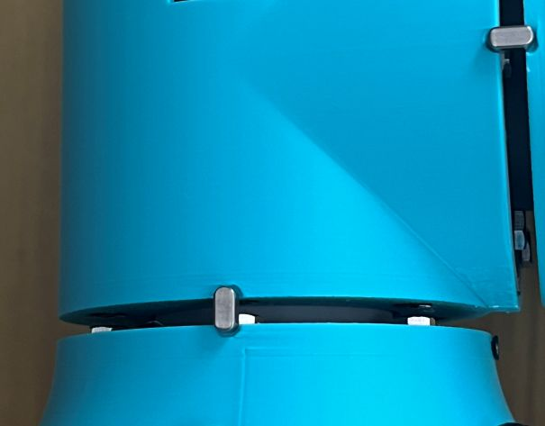
故障排查
| 现象 | 可能原因 | 处理办法 |
|---|---|---|
MoveIt Plan 成功但 Execute 失败；报 couldn't receive full current joint state / time 0.000000 |
/joint_states 未发布：① joint_state_broadcaster 未 active（spawner 抢锁失败）；② CAN 无反馈，硬件接口读不到关节角 |
① ros2 control list_controllers 确认两个控制器 active；② ros2 topic hz /joint_states 应有 ~100Hz；③ 检查 CAN/供电，用 motor_gui 验证；④ 重新编译并重启 Demo |
MoveIt / RViz 卡在启动界面；终端报 Failed to acquire lock in 20 seconds（spawner_mockway_group_controller） |
电机 CAN 连线或供电异常：总线未接通、CAN_H/L 接反/松动、24V 未上电、终端电阻缺失、CAN ID 冲突、USB-CAN 未透传到 WSL（/dev/ttyACM0 不可用）等，导致 ros2_control 无法完成硬件初始化，控制器 spawner 一直抢锁重试 |
① 断电后检查各电机 CAN 串联与 120Ω 终端电阻；② 确认 24V 供电与 USB-CAN 模块（921600 / CAN 1M）；③ 用 motor_gui 逐台验证 ID 与通信；④ WSL 下先执行 USB 透传并确认 ls /dev/ttyACM0；⑤ 仅验证 MoveIt 软件时：ros2 launch moveit_mockway_config demo.launch.py use_mock_hardware:=true |
| motor_gui 连接后无反馈 | 电机 ID / Master ID 不匹配；CAN 接线错误；未上电 | 用达妙助手 Read Param 核对 ID；检查 CAN_H/L；确认 24V 供电 |
| 多台电机同时连接时混乱 | 存在重复 CAN_ID | 逐台断开，单独用调试助手重新 Write Param |
| MoveIt 某关节无响应 | ros2_control.xacro 中 can_id 与电机不一致 |
对照本文 ID 表检查 xacro 与 dynamics_test.yaml |
| J3 方向相反 / 某关节补偿反力 | 物理安装与默认 dir 不一致；未按 URDF 正方向设置 direction |
在 motor_gui 中逐关节验证正转与 rad 正负（见关节旋转方向），修正 yaml 与 xacro 中的 direction / dir；勿随意改 CAN ID |
| 补偿力矩过大/过小，或完整动力学模式抖动 | 两种模式共用倍率；full_dynamics_torque_scale 过大 |
分开设置 gravity_torque_scale 与 full_dynamics_torque_scale；称重修正 URDF |
| CAN 总线无数据 | 缺少 120Ω 终端电阻；波特率非 1M | 总线两端加 120Ω；确认适配器与电机均为 1 Mbps |
快速 CAN 测试命令（Linux / SocketCAN）
# 使能 ID=1 的电机 cansend can0 001#FFFFFFFFFFFFFFFFFC # 监听总线 candump can0